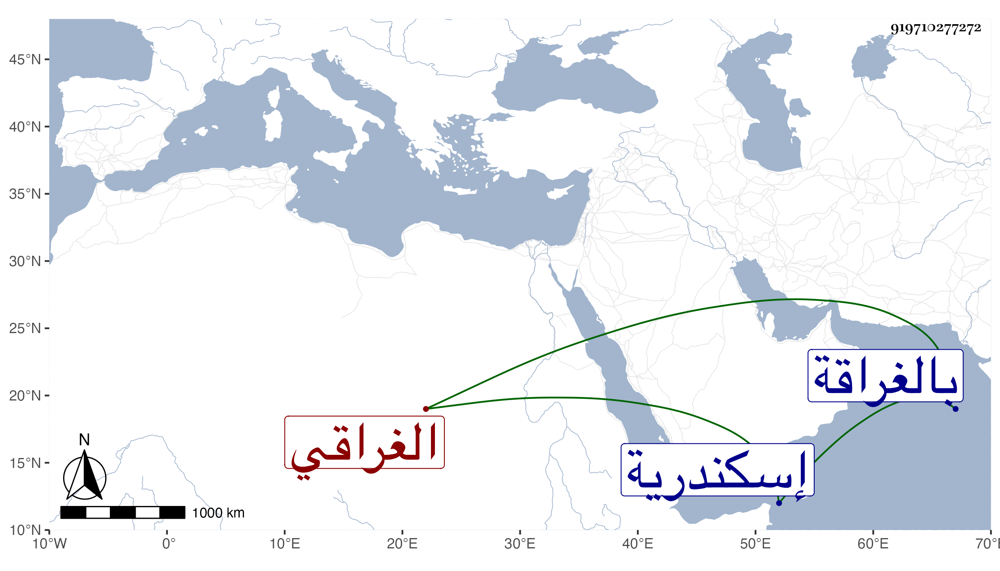

0902Sakhawi.DawLamic.ITO20230111-ara1.EIS1600.919710277272
Biography ID: 919710277272
606
محمد الشمس أبو السعود الغراقي شقيق الذي قبله . ولد سنة إحدى وثمانمائة بالغراقة وتحول منها مع أبيه وأخيه وهو مميز في سنة تسع فنزلوا الصحراء بتربة يلبغا وحفظ القرآن عند الفقيه بها البرهان إبرهيم بن نوح الهريبطي الشافعي وجود على أبي الحسن على بن آدم المقرئ وحفظ العمدة والملحة وألفية النحو والمنهاج الفرعي واليسير من التنبيه كتاب أبيه وعرض على الشمس الغراقي وغيره وسمع على ابن الكويك من لفظ شيخنا السنن الكبرى للنسائي والعمدة والرائية والشفا ومعظم مسلم وعلى الولي العراقي ختم مسند أبي يعلى وأجاز له من ذكر في أخيه ، وحج مرارا ودخل إسكندرية للزيارة وتكسب بالشهادة دهرا إلى أن كف بصره فقطن بيته مدة تحول لعدة أمكنة وحدث حينئذ بالصحيح والنسائي والشفا والعمدة وكان محبا في ذلك مشاركا في فوائد ونكت وحكايات أجاز في استدعاء بعض الأولاد . ومات في ليلة الأربعاء سابع عشر شعبان سنة تسع وثمانين بقنطرة الموسكي عند ابن أخيه ودفن بحوش الأشرف برسباي المجاور لتربته رحمه الله وعفا عنه .
